Bring every shot to the same start line
Primary correction only unifies exposure, white balance and contrast: align black, white and skin on every shot before discussing a look. Use scopes, not guesswork in a dark room.
Order: normalize exposure, normalize white balance, normalize contrast, then check shot-to-shot jumps. If one step is skipped, the secondary grade locks the cast in.
Limits
Primary is not “make every shot equally bright.” Different shot sizes and lighting may differ; unify the reference, not the emotion.
On set
Shoot a grey or color card first: set black to 0 to 5 and white below 100. Match every shot in the scene, then check the skin line.
Primary correction: exposure, balance, contrast

Do this
Primary correction fixes exposure and white balance before style.
- Shoot a gray or color chart; set black to 0 to 5 and white below 100.
- Match every shot in the scene for exposure and white balance, then check the skin line.
- Add contrast and style only after the technical problems are gone.
Avoid
Do not use a LUT to hide technical problems; it makes them look prettier.
Image note. Covers, diagrams and step images on this page are editorial illustrations or structure diagrams, not photographs of a test performed here; they are not evidence of measured gear performance. Where an image is AI-assisted, the caption says so. Read the test conditions in the text before treating an image as proof.